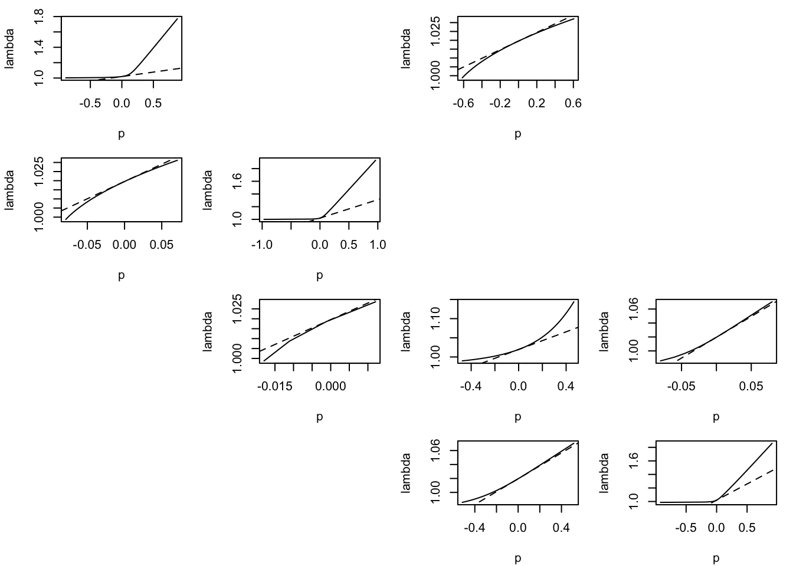

##example of projection calculations for sub-population 1
library('popbio')##
## Attaching package: 'popbio'## The following object is masked _by_ '.GlobalEnv':
##
## teasellibrary('popdemo')## Welcome to popdemo! This is version 1.3-0
## Use ?popdemo for an intro, or browseVignettes('popdemo') for vignettes
## Citation for popdemo is here: doi.org/10.1111/j.2041-210X.2012.00222.x
## Development and legacy versions are here: github.com/iainmstott/popdemo#library('modeest')
#matrices of transitions for sub-population 1
popState <- c(13, 16, 2, 19) #vector of sub-population 1 abundances for last year of observations
transMat <- list() #matrix of transitions
transMat$T1 <- rbind(c(0.7869273, 0, 0.8300450, 0), c(0.1760353, 0.97248154, 0, 0), c(0, 0.01578038, 0.5746824, 0.07676408), c(0, 0, 0.4162108, 0.92323588))
transMat$T2 <- rbind(c(0.8285143, 0, 5.542540e-10 , 0), c(0.1396047, 0.96356898, 0, 0), c(0, 0.02150297, 0.4921383, 0.08007071), c(0, 0, 0.4983780, 0.91992925))
transMat$T3 <- rbind(c(0.8503599, 0, 5.636965e-10 , 0), c(0.1052920, 0.96467304, 0, 0), c(0, 0.01998974, 0.4835024, 0.08807574), c(0, 0, 0.5073186, 0.91192422))
transMat$T4 <- rbind(c(0.90264580, 0, 5.235940e-10, 0), c(0.06590077, 0.9630270, 0, 0), c(0, 0.0208872, 0.5139655, 0.08746788), c(0, 0, 0.4768932, 0.91253208))
transMat$T5 <- rbind(c(0.91771803, 0, 0.3499083, 0), c(0.05391462, 0.97005810, 0, 0), c(0, 0.01632058, 0.4419389, 0.07880436), c(0, 0, 0.5489797, 0.92119559))
transMat$T6 <- rbind(c(0.87316400, 0, 1.687415e-10, 0), c(0.08590074, 0.95334666, 0, 0), c(0, 0.02579743, 4.139104e-01, 0.08205262), c(0, 0, 5.766711e-01, 0.91794733))
transMat$T7 <- rbind(c(0.90703646, 0, 6.906485e-10, 0), c(0.06060516, 0.96867738, 0, 0), c(0, 0.01777129, 4.849267e-01, 0.07774181), c(0, 0, 5.058289e-01, 0.92225814))
transMat$T8 <- rbind(c(0.93404923, 0, 3.449700e-10, 0), c(0.04564076, 0.97236335, 0, 0), c(0, 0.01519189, 4.806209e-01, 0.07931822), c(0, 0, 5.101786e-01, 0.92068174))
transMat$T9 <- rbind(c(0.88524275, 0, 1.565175e-10, 0), c(0.07985631, 0.9613211, 0, 0), c(0, 0.0211242, 3.741810e-01, 0.08446428), c(0, 0, 6.166460e-01, 0.91553567))
transMat$T10 <- rbind(c(0.91569045, 0, 3.667075e-10, 0), c(0.05907888, 0.97480231, 0, 0), c(0, 0.01365979, 5.778412e-01, 0.07328772), c(0, 0, 4.130556e-01, 0.92671224))
transMat$T11 <- rbind(c(0.9170242, 0, 3.657935e-10, 0), c(0.0573607, 0.97434500, 0, 0), c(0, 0.01424255, 4.055471e-01, 0.07605183), c(0, 0, 5.854003e-01, 0.92394813))
transMat$T12 <- rbind(c(0.91868350, 0, 8.395985e-10, 0), c(0.05698844, 0.97126869, 0, 0), c(0, 0.01620411, 4.599883e-01, 0.07786934), c(0, 0, 5.308060e-01, 0.92213062))
transMat$T13 <- rbind(c(0.8933651, 0, 0.4218637, 0), c(0.0754819, 0.96883951, 0, 0), c(0, 0.01741538, 0.4741468, 0.08011046), c(0, 0, 0.5166038, 0.91988950))
transMat$T14 <- rbind(c(0.8941097, 0, 4.074855e-10, 0), c(0.0751373, 0.96842970, 0, 0), c(0, 0.01771008, 4.739166e-01, 0.07977865), c(0, 0, 5.167966e-01, 0.92022130))
transMat$T15 <- rbind(c(0.89332212, 0, 4.823470e-10, 0), c(0.07570813, 0.96829439, 0, 0), c(0, 0.01776341, 4.761405e-01, 0.08013242), c(0, 0, 5.145436e-01, 0.91986753))
transMat$T16 <- rbind(c(0.89225132, 0, 5.007945e-10, 0), c(0.07662393, 0.96863160, 0, 0), c(0, 0.01747498, 4.780552e-01, 0.08001434), c(0, 0, 5.126394e-01, 0.91998562))
transMat$T17 <- rbind(c(0.89289170, 0, 0.9053583, 0), c(0.07597438, 0.96813832, 0, 0), c(0, 0.01785388, 0.4746140, 0.08009411), c(0, 0, 0.5160928, 0.91990584))
transMat$T18 <- rbind(c(0.89225811, 0, 2.24541e-10, 0), c(0.07655306, 0.96828614, 0, 0), c(0, 0.01768011, 4.74461e-01, 0.07999146), c(0, 0, 5.16246e-01, 0.92000850))
transMat$T19 <- rbind(c(0.89225811, 0, 2.24541e-10, 0), c(0.07655306, 0.96828614, 0, 0), c(0, 0.01768011, 4.74461e-01, 0.07999146), c(0, 0, 5.16246e-01, 0.92000850))
transMat$T20 <- rbind(c(0.89279674, 0, 11.7187000, 0), c(0.07637371, 0.96860413, 0, 0), c(0, 0.01752984, 0.4744193, 0.08030667), c(0, 0, 0.5162513, 0.91969328))
transMat$T21 <- rbind(c(0.89453969, 0, 0.1771410, 0), c(0.07457337, 0.96833046, 0, 0), c(0, 0.01773764, 0.4751942, 0.07996677), c(0, 0, 0.5155116, 0.92003319))
transMat$T22 <- rbind(c(0.89360562, 0, 2.087290e-10, 0), c(0.07532944, 0.96833477, 0, 0), c(0, 0.01768248, 4.714852e-01, 0.08010061), c(0, 0, 5.192556e-01, 0.91989934))
transMat$T23 <- rbind(c(0.8920189, 0, 3.928490e-10, 0), c(0.0768873, 0.96852428, 0, 0), c(0, 0.01750726, 4.745888e-01, 0.07982504), c(0, 0, 5.161487e-01, 0.92017492))
transMat$T24 <- rbind(c(0.89387344, 0, 0.3548790, 0), c(0.07528274, 0.96816469, 0, 0), c(0, 0.01784024, 0.4740048, 0.08062855), c(0, 0, 0.5167163, 0.91937140))
#calculate the average transition matrix
meanT = mean(transMat)
print(meanT)## [,1] [,2] [,3] [,4]
## [1,] 0.88976444 0.00000000 0.6149123 0.00000000
## [2,] 0.07902736 0.96794989 0.0000000 0.00000000
## [3,] 0.00000000 0.01793115 0.4749471 0.08012121
## [4,] 0.00000000 0.00000000 0.5158091 0.91987874sdT = sqrt(var2(transMat))
print(sdT)## [,1] [,2] [,3] [,4]
## [1,] 0.03076968 0.000000000 2.37943626 0.000000000
## [2,] 0.02762579 0.004463279 0.00000000 0.000000000
## [3,] 0.00000000 0.002541149 0.04303332 0.003148834
## [4,] 0.00000000 0.000000000 0.04302022 0.003148834lambda = lambda(meanT)
cat('lambda', lambda, '\n')## lambda 1.019567ss = stable.stage(meanT)
cat('stable stage', ss, '\n')## stable stage 0.2607997 0.3992937 0.05505245 0.2848541rv = reproductive.value(meanT)
cat('reproductive value', rv, '\n')## reproductive value 1 1.642499 4.728128 3.800087elas = elasticity(meanT)
cat('elasticity', '\n')## elasticityprint(elas)## [,1] [,2] [,3] [,4]
## [1,] 0.10073316 0.00000000 0.01469536 0.00000000
## [2,] 0.01469536 0.27557562 0.00000000 0.00000000
## [3,] 0.00000000 0.01469536 0.05366627 0.04684352
## [4,] 0.00000000 0.00000000 0.04684352 0.43225185cat('transfer function analysis', '\n')## transfer function analysisele.mat <- matrix(NA, 4,4)
ele.mat[1,3] <- "F"
ele.mat[1,1] <- "P"
ele.mat[2,1] <- "P"
ele.mat[2,2] <- "P"
ele.mat[3,2] <- "P"
ele.mat[3,3] <- "P"
ele.mat[4,3] <- "P"
ele.mat[3,4] <- "P"
ele.mat[4,4] <- "P"
par(mfrow=c(4,4))
par(mar=c(4.1, 4.1, 1.1, 1.1))
zeros <- c(0, 0, 0, 0)
for(i in 1:4) {
for(j in 1:4) {
if(meanT[i,j] <= 1e-10) {
plot(0,xaxt='n',yaxt='n',bty='n',pch='',ylab='',xlab='')
next()
}
d1 <- e1 <- zeros
d1[i] <- 1
e1[j] <- 1
delta <- 1*seq(-meanT[i,j], meanT[i,j], 0.01)
tf1 <- tfa_lambda(meanT, d = d1, e = e1, prange = delta)
plot(tf1)#, xlab="Perturbation", ylab=expression(lambda))
s76 <- sens(meanT)[i, j]
abline(eigs(meanT, "lambda"), s76, lty = 2)
}
}
popSGR = stoch.growth.rate(transMat, verbose=F)
lambdaCI = list()
lambdaCI$approx = exp(popSGR$approx)
lambdaCI$sim = exp(popSGR$sim)
lambdaCI$sim.CI = exp(popSGR$sim.CI)
cat('lambda\n')## lambdaprint(lambdaCI)## $approx
## [1] 1.017915
##
## $sim
## [1] 1.017814
##
## $sim.CI
## [1] 1.016816 1.018813#Runs the projections. nreps is the number of replications. Takes awhile to run
popProject = stoch.projection(matrices=transMat, n0=popState, tmax=240, nmax=1000, nreps=1e4, prob=rep(1/24, length=24), verbose=FALSE)
totPopSize = apply(popProject, 1, sum)
hist(totPopSize, breaks=100, col="black", border="white", xlab="Final population size at t=240 (24 years)", main='Sub-population 1')
graphics.off()
#mlvPop = mlv(totPopSize, method = "naive")
extin=c()
popQuant = matrix(NA, 3, 241)
popQuant[,1] = rep(sum(popState), 3)
popMean = vector('numeric', 241)
popMean[1] = sum(popState)
popSD = vector('numeric', 241)
popSD[1] = NA
for(i in 1:240){
matriz=c()
interactionX=1000
quasi=2
popExtinctProject<-stoch.projection(matrices=transMat, n0=popState, tmax=i, nmax=500, nreps = interactionX, prob = rep(1/24, length=24), verbose=FALSE)
for(ii in 1:interactionX){
a=sum(popExtinctProject[ii,])
matriz<-rbind(matriz,c(a))
}
vv=matriz[matriz<quasi]
s=length(vv)
extin=c(extin,s)
popQuant[,i+1] <- quantile(apply(popExtinctProject, 1, sum), probs=c(0.025, 0.5, 0.975))
popMean[i+1] = mean(apply(popExtinctProject, 1, sum))
popSD[i+1] = sd(apply(popExtinctProject, 1, sum))
}
plot(popMean, xlab="Time (months)", ylab="Number of individuals (n)", type='l', main="Sub-pop 1", lwd=2, ylim=c(0,max(popQuant, na.rm=T)))
lines(popQuant[1,])
lines(popQuant[3,])
graphics.off()
plot(extin/interactionX, type='l', lwd=2, xlab="Months into future", main="Extinction probability for sub-population 1")